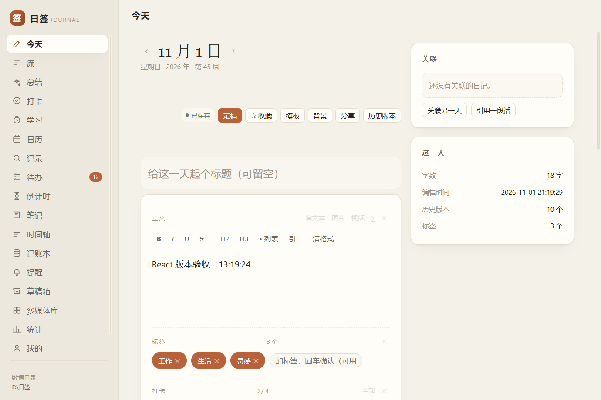
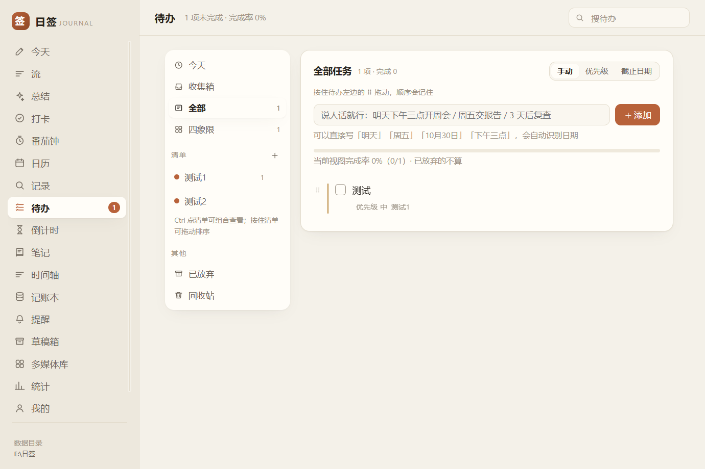
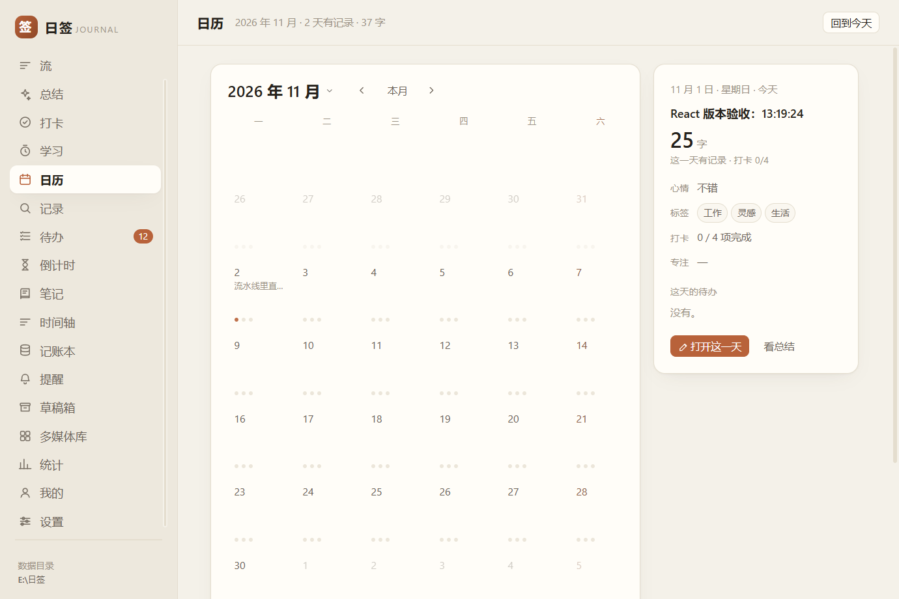
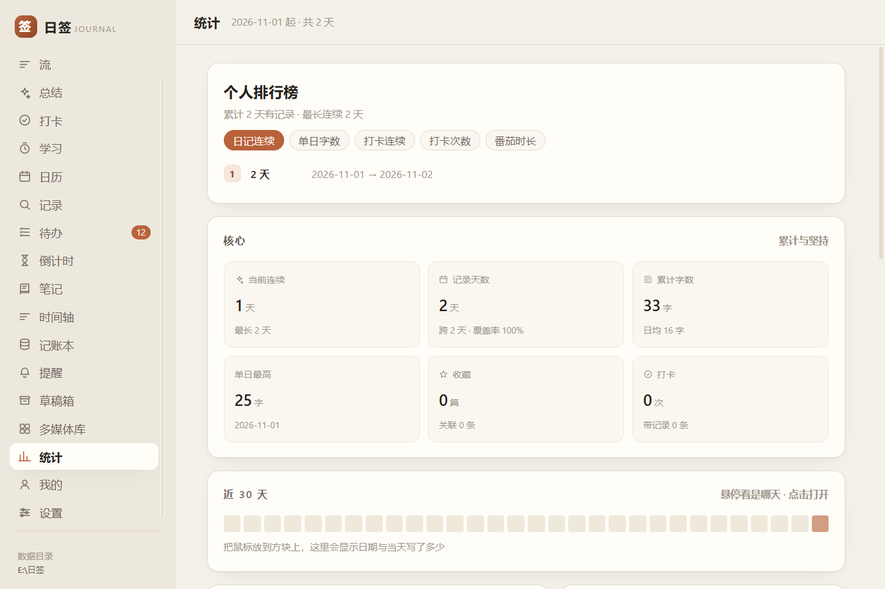
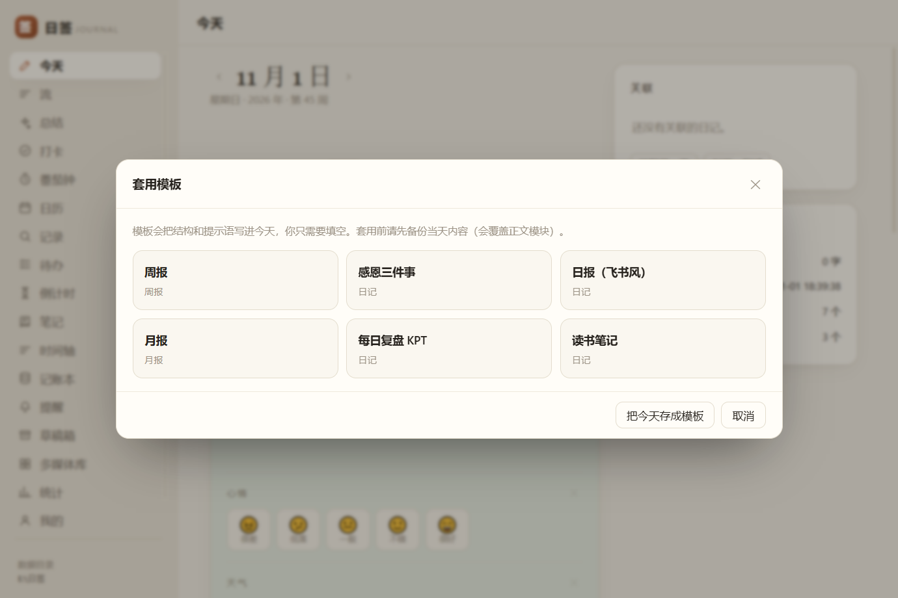

日签是一个完全本地、单机、离线的个人日记与生活记录桌面程序。 数据只存在你电脑上的一个 SQLite 文件里 —— 不联网、不要账号、不上传云端。

不是又一个 Markdown 编辑器。日记、打卡、待办、计时长在同一根时间轴上。
富文本 / Markdown / BBCode 三种写法。模块化拼装：心情、天气、睡眠、图片、引用、LaTeX 公式，想加什么加什么。
不只是打勾。可以记几点起床、跑步多少分钟、读了几页 —— 数值型习惯会自己长成趋势图。
输入「明天下午三点开会」自动识别日期时间。四象限优先级、子清单、重复规则、清单分组。
专注计时 + 统计 + 按天／周／月的图表。关掉窗口也会继续跑，结束提醒。
纪念日、目标日。认得「每月最后一个周四 交房租」这种说法，也能手动排序置顶。
日历热力图、那年今日、全文搜索、标签、收藏、跨天引用 —— 写下的东西要能找得回来。
任意笔记可以钉成一扇小窗浮在桌面上。双击标题栏切尺寸，改完自动落库。
无限层级嵌套的笔记本树。也支持画板、多媒体库、附件。
记账本、提醒闹钟、储蓄罐、统计面板、时间轴、全局快捷键唤出快速记录。
大多数日记软件的隐私承诺靠「我们不会看」。日签的承诺靠架构： 它根本没有可上传的地方。断网也完全能用。
想备份？把整个数据文件夹拷到网盘或 U 盘就是完整备份。
想换电脑？拷回去就行，不需要登录、不需要迁移向导。
真实截图，没有修饰。四个语言（中／英／日／德）都有对应字体栈。




全部免费、MIT 开源。三个包是同一个程序，按你的习惯挑一个。
portable.txt：
有 → 数据放 exe 同级的「日签数据」文件夹；没有 → 数据放 %APPDATA% 里配的目录。
你随时可以自己建一个这个空文件把安装版转成便携版，不用重装。SHA256SUMS.txt 核对哈希。
如果你想知道它为什么是 60 MB 的单文件、以及为什么数据能这么稳。
| 宿主 | C# / WinForms 单窗口，内嵌 WebView2 渲染界面。整个界面和逻辑打进一个 exe。 |
| 界面 | React 18 + TypeScript + Vite，打包成单个 index.html 内联进 exe（约 1.4 MB）。 |
| 数据 | SQLite 单文件，WAL 模式，关闭时强制 checkpoint。导出、备份、换机器都只是拷文件。 |
| 通信 | WebView2 进程内消息通道，不开端口、不起本地服务。共 226 个 RPC 方法。 |
| 质量 | CI 每次提交跑 13 步：全新环境构建 → 体积检查 → 全新装机自检 → 真启动打 10 个只读接口。 |